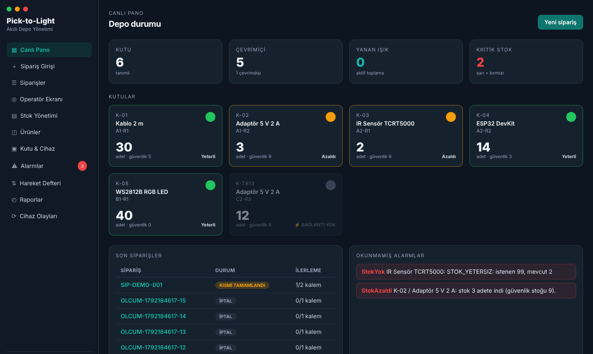
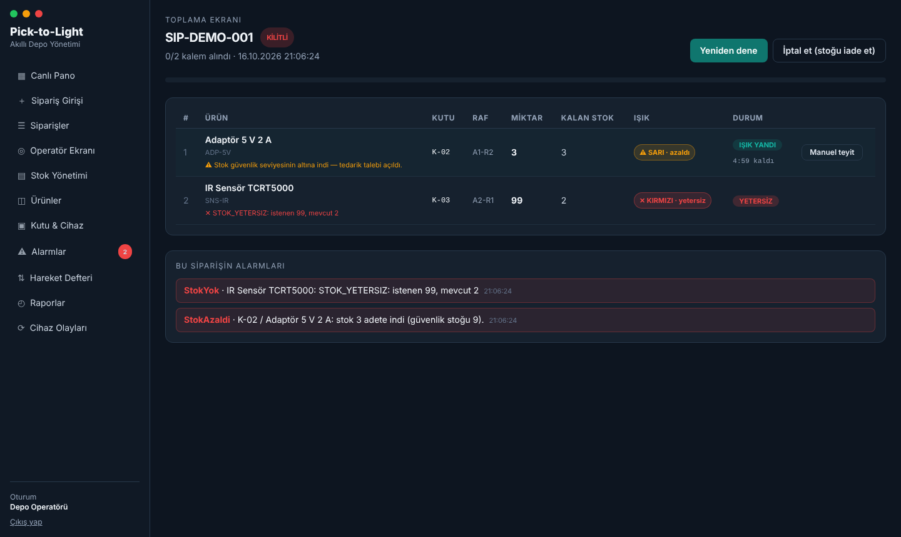
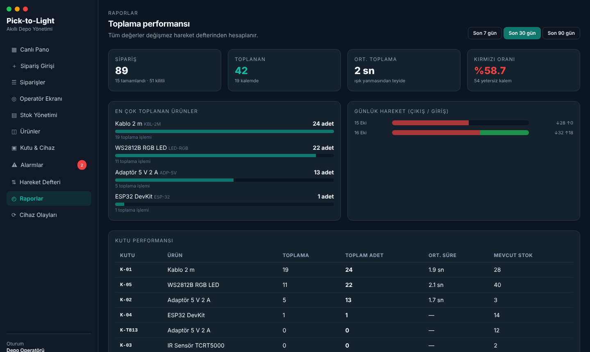

Operatör
Kiosk ekranı — 3 metreden okunur
Operatör ekran taramaz: hangi kutudan kaç adet alacağını tek bakışta görür; sensör arızalanırsa "ALDIM" ile onaylar.

05 / 10


UPDATE stok SET adet = adet - @miktar, versiyon = versiyon + 1 WHERE kutu_id = @kutuId AND adet >= @miktar RETURNING adet + @miktar AS onceki, adet AS sonraki; -- etkilenen satır yok → stok yetersiz, hiçbir şey değişmedi
Koşullu UPDATE · CHECK (adet ≥ 0) kısıtı · versiyon eşzamanlılık belirteci. Hareket kaydı aynı transaction'da yazılır — "düştü ama loglanmadı" olamaz.
| Senaryo | Sonuç |
|---|---|
| 20 paralel sipariş · stok 7 · 2'şer adet | tam 3 rezervasyon, stok 1 |
| 50 paralel düşme · stok 20 · 1'er adet | tam 20 başarılı, stok 0 |
| SQL ile negatife düşürme denemesi | kısıt reddetti (23514) |
| 15 paralel tedarik talebi | tek kayıt açıldı |
Hareket defteri zinciri eşzamanlılıkta bile kopmuyor: her satırın "önceki"si bir öncekinin "sonraki"si.
Yeniden deneme stratejisinin transaction'ı kırması · defterdeki önceki adedin yanlış yazılması · tedarik talebinde yarış koşulu · EF'in eski stok değerini geri yazması · durum makinesinde eksik geçiş. Hepsi testlerle bulundu ve düzeltildi.
| Test katmanı | Adet | Kapsam |
|---|---|---|
| Domain birim | 34 | Işık kararı sınır değerleri, durum makineleri |
| Servis birim | 40 | Sipariş akışı, kalem bölme, kutu seçimi, stok servisi |
| Entegrasyon | 17 | Gerçek PostgreSQL + HTTP: akış, eşzamanlılık, güvenlik, zaman aşımı |
| Toplam | 91 | CI'da her push'ta koşuyor |
| Ölçüm | p50 | p95 | Hedef |
|---|---|---|---|
| Sipariş → LED komutu | 11,5 ms | 24,4 ms | 1000 ms ✔ |
| API yanıtı (başlatma) | 18,6 ms | 33,3 ms | 200 ms ✔ |
tools/olcum.py ile ölçüldü. Gerçek ESP32'nin ışığı yakma süresi dahil değil; depo ağında tekrarlanacak.
Broker durdurulduğunda /health Degraded döndü, komutlar kuyruğa alındı; broker geri gelince Healthy'ye dönüp kuyruk boşaldı. Kutu sessiz kalınca 60 sn içinde çevrimdışı işaretlendi.

# hazırlık + dört senaryo + özet
bash tools/demo.sh hepsi
Not: Yazılım, donanımı beklemeden simülatörle uçtan uca doğrulandı — planın 1 numaralı riski (donanım gecikmesi) böylece karşılandı.